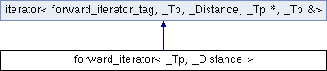

类 forward_iterator< _Tp, _Distance > 继承关系图:

额外继承的成员函数 | |
 Public 类型 继承自 iterator< forward_iterator_tag, _Tp, _Distance, _Tp *, _Tp &> Public 类型 继承自 iterator< forward_iterator_tag, _Tp, _Distance, _Tp *, _Tp &> | |
| typedef forward_iterator_tag | iterator_category |
| typedef _Tp | value_type |
| typedef _Distance | difference_type |
| typedef _Pointer | pointer |
| typedef _Reference | reference |
该结构体的文档由以下文件生成:
- E:/ReactOS-0.4.6/sdk/include/c++/stlport/stl/_iterator_base.h